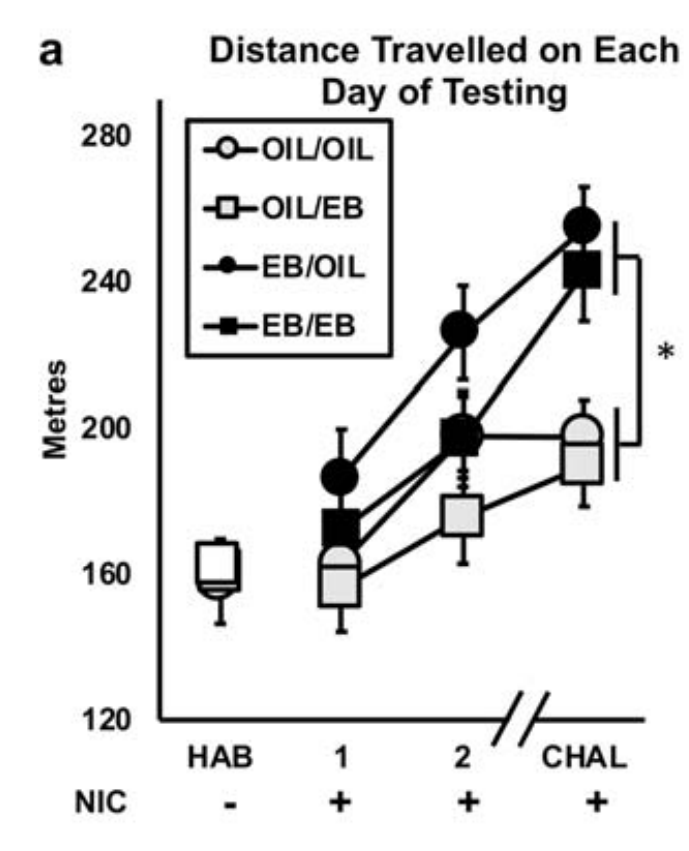

Example Data
There are many available open-source datasets that can be used to explore the unlimited functionality of data analysis in R.
I will use data from my MA thesis to explore basic graphing and data analysis in R.
These data are also Published in a peer-reviewed journal.
Methods
- On each of the 4 days of testing, rats completed a 1hr long open field test (run around empty box - 64cm * 64cm).
- Hab: Habituation session (no drug)
- IND_1: Induction 1 - day after Hab (0.4 mg / kg nicotine)
- IND_2: Induction 2 - day after IND_1 (0.4 mg / kg nicotine)
- CHAL: Challenge day. - 9 days after IND_2 (0.4 mg / kg nicotine)
Distance traveled (cm) by each rat during the open field test was captured by an overhead camera and auto-scored by a program called SMART.
The basis of this paradigm is that rats will increase their locomotor output during repeated administrations of nicotine (i.e. will exhibit locomotor sensitization to repeated nicotine injections).
-
N = 47 adult female Ovariectomized (OVX) rats.
- Because all the rats are OVX, they are considered to be estrogen-depleted
-
Main experimental manipulation: Administered 5ug estradiol benzoate (synthetic exogenous estrogen; EB) 30 minutes before nicotine injection:
- On both induction days (n = 12)
- On the challenge day (n = 12)
- At both timepoints (n = 12)
- At neither timepoint (Control, n = 11)
Link to raw data
Load Data in R
library(tidyverse) # Load the tidyverse
data <- read_csv("EB_Rats_Nicotine_Sensitization.csv") # Call data
head(data) # Show me the top 6 rows of the data
## # A tibble: 6 × 9
## ID Sex Status PREhorm CHALhorm Hab IND_1 IND_2 CHAL
## <dbl> <chr> <chr> <dbl> <dbl> <dbl> <dbl> <dbl> <dbl>
## 1 1 Female OVX 1 1 16625 15730 17834 18070
## 2 2 Female OVX 1 1 17097 20482 26562 28665
## 3 3 Female OVX 0 1 17909 23757 17523 22136
## 4 4 Female OVX 0 1 14199 11810 13086 11609
## 5 5 Female OVX 0 0 21715 23184 27482 26809
## 6 6 Female OVX 0 0 14733 19223 23280 23845
Data organized in the format one subject one row (golden rule of data organization).
Published Result
Graph made using excel, before I knew how to use R.. :')
- Many interesting effects in this data!
- Can approach analysis using the GLM in a variety of ways.
- Feel free to explore SPSS and / or R using this dataset.